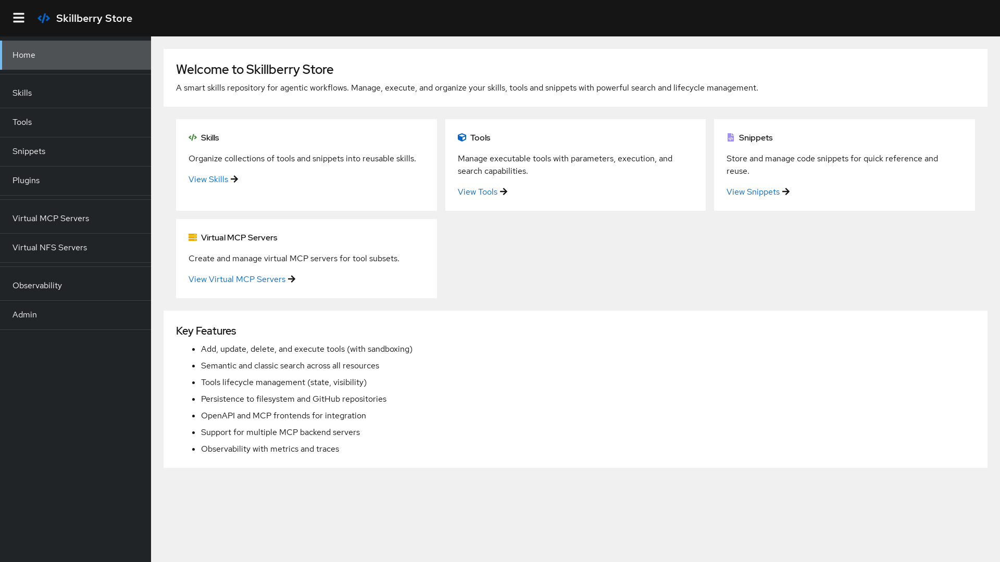
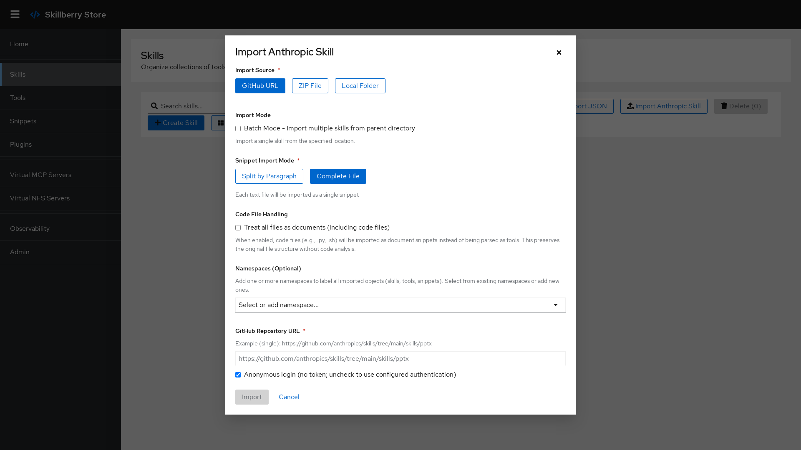

1. Prerequisites
- Docker or Podman installed on your machine (used to sandbox tool execution).
- For local deployment: your user has Docker permissions (member of the
dockergroup), and the Docker logging driver isjson-fileorjournald. - Node.js 18+ is only needed if you run the UI from source — the Docker image bundles it.
Prefer Podman? Alias docker to podman in your shell profile (~/.zshrc, ~/.bashrc, …). On macOS, start a Podman machine first — see the README for the exact commands.
2. Install
Install the minimal package (core plus the two default plugins, dedupe and kagenti-approver):
pip install skillberry-storeOr install with the full plugin ecosystem:
# All plugins
pip install skillberry-store[plugins-all]
# A single plugin
pip install skillberry-store[plugin-creator]
# Several specific plugins
pip install skillberry-store[plugin-creator,plugin-evaluator,plugin-skill-optimizer]See the Plugins page for the full list and per-plugin options.
3. Run the service
The simplest way to start everything (backend, UI, and observability) is Docker or Podman:
make docker-runControl where SBS stores its data by setting SBS_BASE_DIR (defaults to the system temp directory). Run make help for the full list of options.
Prefer running from source instead of Docker?
git clone git@github.com:skillberry-ai/skillberry-store.git
cd skillberry-store
make install-requirements # Linux, macOS, or WSL
make run4. Open the UI & API
The modern web UI starts automatically alongside the backend:
Web UI
http://localhost:8002 — the React-based console for tools, skills, snippets, VMCP & vNFS servers, and plugins.
API docs
http://localhost:8000/docs — the OpenAPI / Swagger interface for the REST API.
To run only the backend without the UI:
ENABLE_UI=false make run
The Skillberry Store home screen
5. Import your first skills
Bring existing skills into the store from several sources — no need to author everything by hand:
- GitHub — import Anthropic-format skills directly from a repository.
- ZIP archive — upload a packaged skill.
- Local folder — point the store at a directory on disk.
- MCP server — import tools from any MCP SSE endpoint via the MCP Importer plugin.

Importing skills through the UI
Importing from private sources? Skill-import authentication uses a single file shaped like gh's hosts.yml (set via SBS_IMPORT_AUTH_CONFIG). Public sources need no configuration — imports are anonymous by default.
6. Connect an agent
Point any MCP-compatible client (Claude, Cursor, LangGraph, …) at the store:
# Every REST operation, exposed as MCP tools
http://127.0.0.1:8000/control_sse
# A single skill as its own virtual MCP server
curl -X POST "http://localhost:8000/vmcp_servers/?name=my-skill&skill_uuid=<uuid>"
# → connect your MCP client to http://localhost:<assigned-port>/sseSee Features for VMCP and vNFS in depth, or the CLI page to drive everything from your terminal.
Common configuration
Everything except import auth is configured through environment variables. The most useful defaults:
| Setting | Default | Variable |
|---|---|---|
| API host / port | 0.0.0.0 / 8000 | SBS_HOST / SBS_PORT |
| Web UI port | 8002 | SBS_UI_PORT |
| Enable UI | True | ENABLE_UI |
| Prometheus metrics port | 8090 | PROMETHEUS_METRICS_PORT |
| Observability | True | OBSERVABILITY |
| Storage base directory | {temp}/skillberry-store | SBS_BASE_DIR |
| Vector database | faiss | SBS_VDB |
| Execute Python locally | False (uses Docker) | EXECUTE_PYTHON_LOCALLY |
The full reference lives in the repository's configuration guide.
Next: explore the Features, browse the Plugin ecosystem, or learn the sbs CLI.